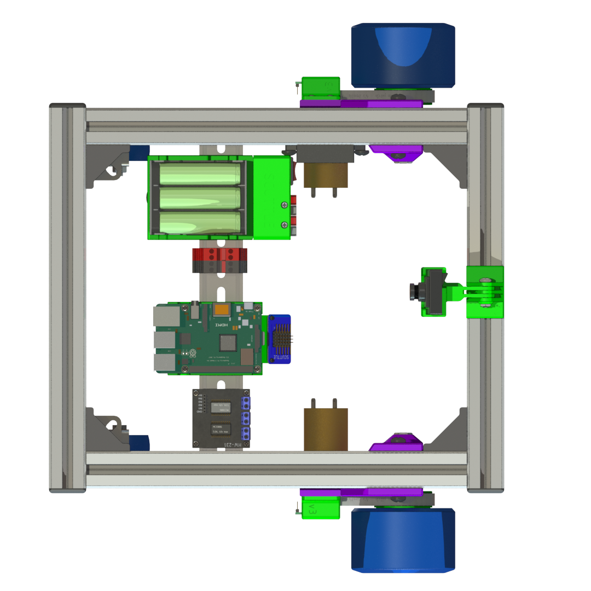
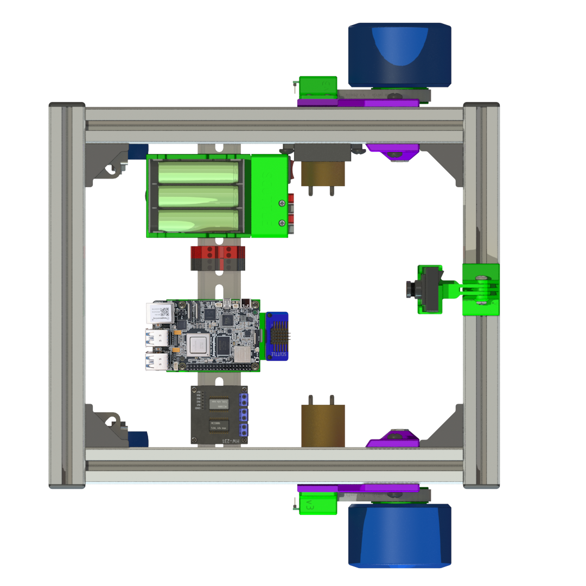
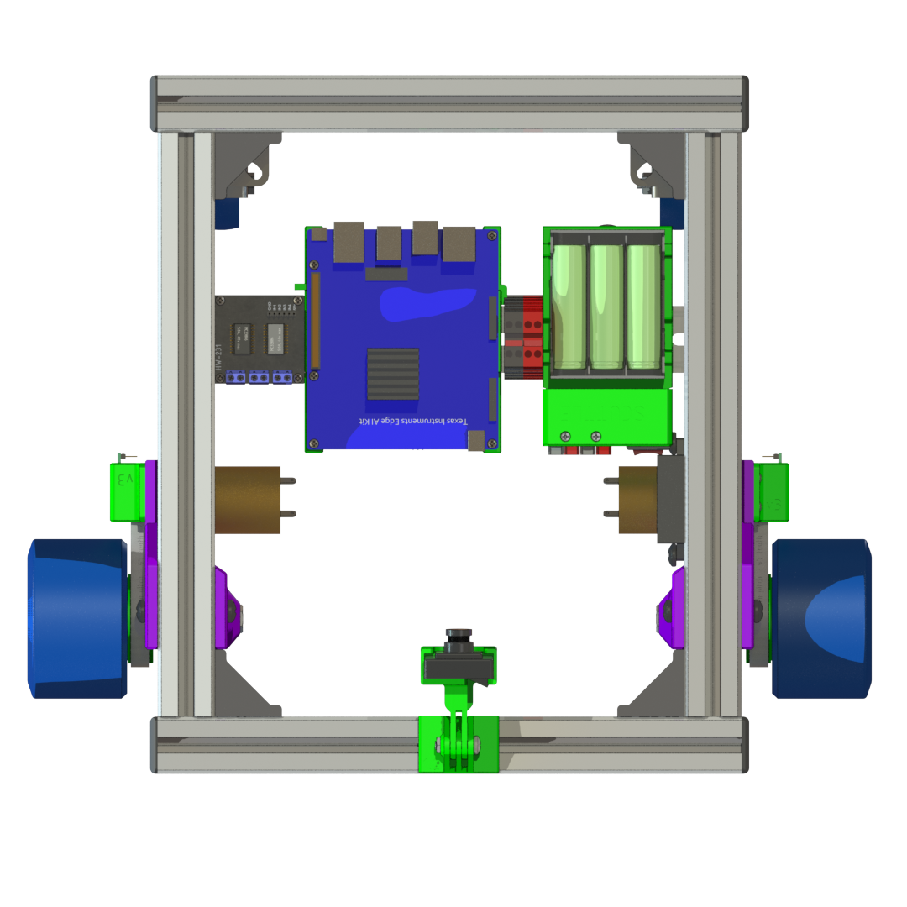
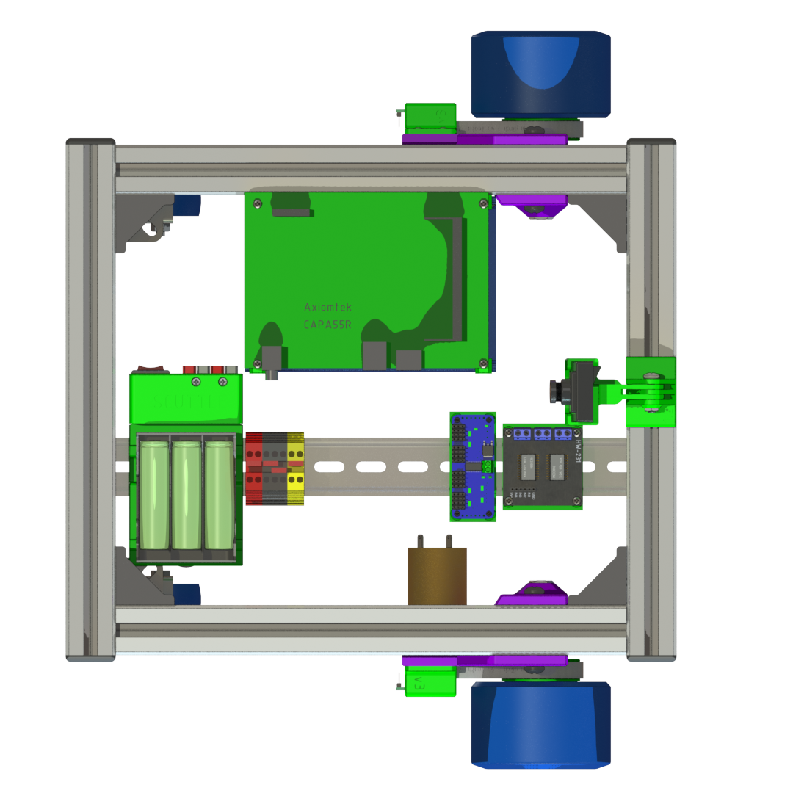
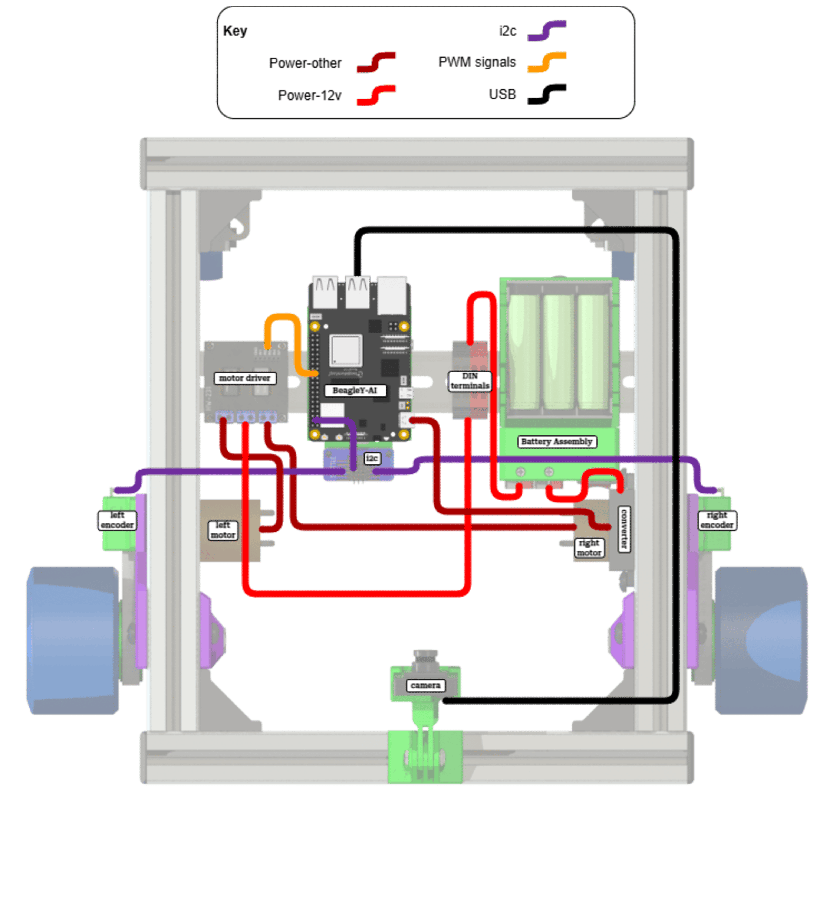
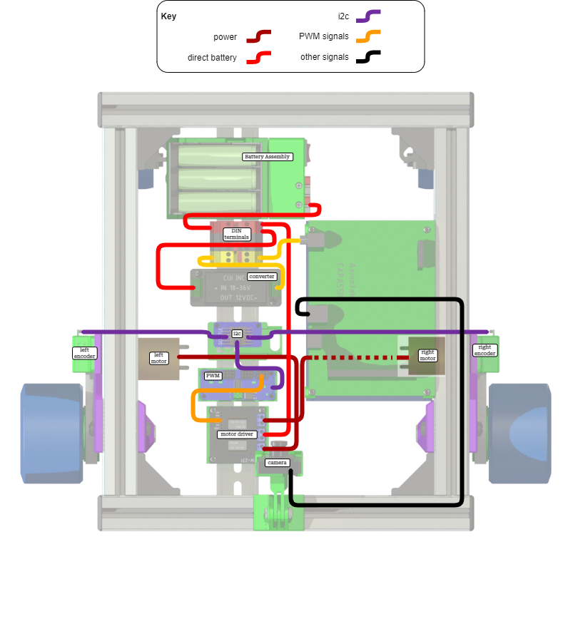

Computing Guide
This section covers the various computer options for your SCUTTLE CPU. It starts with differences in wiring for various SBCs (single board computers).
| Pi | BeagleY-AI | TI | Intel |
|---|---|---|---|
|  |  |  |  |
| Pi 4 Datasheet | Y-AI Datasheet | TDA4VM Datasheet | SBC Datasheet |
| Pi 4 Home | Y-AI Home | TDA4VM SK Product Page | CAPA55R Product Page |
| Y-AI on SCUTTLE |
Pi 4
Raspberry Pi 4B with Broadcom ARM processor
DOWNLOAD editable design
Overview of wiring SCUTTLE with Pi:

Figure: Pi wiring overview
Beagle
BeagleY-AI, released 2024 March
EDIT the design
- Official documentation docs.beagle.cc
- Pinout diagram here: pinout.beagley.ai
- Expert user review: docs.beagle.cc

Figure: Beagleboard Pinout diagram
TI Edge AI
Texas Instruments "Edge AI" sbc with TDA4VM ARM processor
DOWNLOAD editable design
Overview of wiring SCUTTLE with TDA4VM:

Figure: Edge AI wiring overview
Edge AI Pinout
| Function | PIN | Function | |
|---|---|---|---|
| Power_3.3 | 1 | 2 | Power_5.0 |
| I2C_SDA | 3 | 4 | Power |
| I2C_SCL | 5 | 6 | GND |
| GPIO | 7 | 8 | UART_TXD |
| GND | 9 | 10 | UART_RXD |
| GPIO | 11 | 12 | I2S_SCLK |
| GPIO | 13 | 14 | GND |
| GPIO | 15 | 16 | GPIO |
| Power_3.3 | 17 | 18 | GPIO |
| SPI_MOSI | 19 | 20 | GND |
| SPI_MISO | 21 | 22 | GPIO |
| SPI_SCLK | 23 | 24 | SPI_CS0 |
| GND | 25 | 26 | SPI_CS1 |
| ID_SDA | 27 | 28 | ID_SCL |
| GPIO | 29 | 30 | GND |
| GPIO | 31 | 32 | PWM0 |
| PWM1 | 33 | 34 | GND |
| I2S_FS | 35 | 36 | GPIO |
| GPIO | 37 | 38 | I2S_DIN |
| GND | 39 | 40 | I2S_DOUT |
Intel CAPA55R
Axiomtek CAPA55R single-board industrial computer with Intel i7 X86 processor
DOWNLOAD editable design
Overview of wiring SCUTTLE with Intel-based CAPA55R:

Figure: Intel wiring overview
Axiomtek's CAPA55R Intel-based computer for industrial robotics:

Figure: Axiomtek / Intel CAPA55R SBC